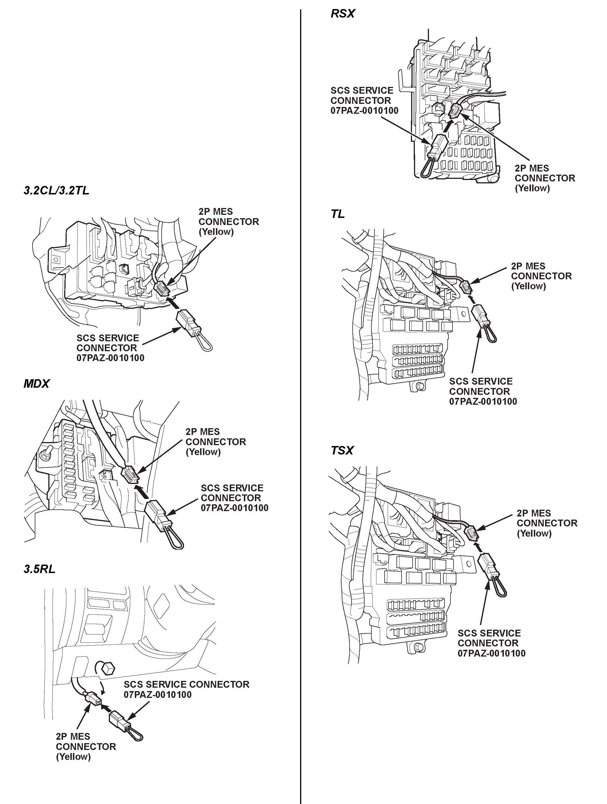

Restraints - OPDS Unit Initialization Procedure
02-020August 16, 2012
Applies To:
Models with OPDS Unit - ALL
Initializing the OPDS Unit
(Supersedes 02-020, dated July 16, 2004, to revise the information marked by the asterisks)
REVISION SUMMARY
*^ Under TOOL INFORMATION, Honda Diagnostic System (HDS) software information was changed.
^ Under INITIALIZING THE OPDS UNIT: HONDA DIAGNOSTIC SYSTEM, new information was added.
^ Under INITIALIZING THE OPDS UNIT: MANUAL MODE, a step was deleted.*
To work properly, the occupant position detection system (OPDS) unit must be initialized whenever you replace the SRS unit, the OPDS unit, or the seat-back cover or seat-back cushion in the front passenger's seat.
You can initialize the OPDS unit two different ways: (1) using the Honda Diagnostic System (HDS) or (2) using the Manual Mode.
TOOL INFORMATION
*Honda Diagnostic System (HDS) with latest software version.*
or
SCS Service Connector: PIN O7PAZ-0010100 (Two required for 3.5RL.)
WARRANTY CLAIM INFORMATION
For warranty claim information, refer to the appropriate service bulletin or the flat rate manual.
INITIALIZING THE OPDS UNIT: HONDA DIAGNOSTIC SYSTEM
*NOTE:
This bulletin applies to vehicles with an OPDS unit. For information on vehicles equipped with an ODS unit, refer to these job aids and training modules.
^ Job Aid:SRS Troubleshooting Process
^ Job Aid: SRS Occupant Detection System (ODS) Troubleshooting and Repair
^ Training Module: RSC24 Restraints TIS Procedures
^ Training Module: RSC26 Restraints System Repair Procedures*
1. Adjust the front passenger's seat-back to a normal upright position, and remove anything that is on or near the seat.
2. Start the engine, and turn on the A/C. Close the doors and windows, and run the A/C in Recirculation mode for 30 minutes. (This will dry out any moisture that may be in the front passengers seat.)
3. Turn the ignition switch to LOCK (0).
4. Connect the Honda Diagnostic System (HDS) with the latest software version to the 16P data link connector (DLC).
5. Turn the ignition switch to ON (II), and then turn on the HDS.
6. At the screen prompts, enter the VIN and the odometer reading, and then verify the correct date and time.
7. From the System Selection Menu screen, select SRS.
8. From the Mode Menu screen, select Miscellaneous Test.
9. From the Miscellaneous Test Menu screen, select OPDS Initialization.
10. Follow the remaining screen prompts to complete the OPDS initialization process. If the initialization fails, try initializing the OPDS unit using the Manual Mode.
INITIALIZING THE OPDS UNIT: MANUAL MODE
1. Adjust the front passenger's seat-back to a normal upright position, and remove anything that is on or near the seat.
2. Start the engine, and turn on the A/C. Close the doors and windows, and run the A/C in Recirculation mode for 30 minutes. (This will dry out any moisture that may be in the front passenger's seat.)
3. Turn the ignition switch to LOCK (0).
4. All models except 3.5RL: Connect the Honda Diagnostic System (HDS) with the latest software version to the 16P data link connector (DLC). Leave the ignition switch turned to LOCK (0). Turn on the HDS.
5. 3.5RL only: Plug the SCS service connector into the 2P service check connector. Do not use a jumper wire. Refer to page 24-88 of the 1996-01 3.5RL Service Manual for details. (In ISIS, use the keyword OPDS, and select Initializing the OPDS from the list.) Go to step 7.
6. From the Select Mode screen, select SCS, and follow the screen prompts.

7. Plug the SCS service connector into the 2P memory erase signal (MES) connector, as shown.
Do not use a jumper wire. (For a 3.5RL, you need a second SCS service connector for this step.)
8. Turn the ignition switch to ON (II).
9. Watch the SRS indicator. (It comes on for about 6 seconds and then goes off.) Unplug the SCS service connector from the 2P MES connector within 4 seconds after the indicator goes off.
10. When the SRS indicator comes on again, plug the SCS service connector into the 2P MES connector within 4 seconds after the indicator comes on
11. When the SRS indicator goes off, unplug the SCS service connector from the 2P MES connector within 4 seconds.
12. Watch the SRS indicator:
^ If the indicator blinks twice and then goes off, the OPDS unit is initialized. Turn the ignition switch to LOCK (0), and disconnect the HDS (all models except 3.5RL) or unplug the SCS service connector from the 2P service check connector (3.5RL only). Return the vehicle to your customer.
^ If the indicator blinks twice and then stays on, the OPDS unit is initialized, but the SRS DTCs need to be cleared. Go to step 13.
^ If the indicator stays on without first blinking, the OPDS unit is not initialized. Repeat steps 3thru 10.
13. Turn the ignition switch to LOCK (0), Disconnect the HDS (all models except 3.5RL) or unplug the SCS service connector from the 2P service check connector (3.5RL only).
14. Plug the SCS service connector into the 2P MES connector. Do not use a jumper wire.
15. Turn the ignition switch to ON (II).
16. Watch the SRS indicator. (It comes on for about 6 seconds and then goes off.) Unplug the SCS service connector from the 2P MES connector within 4 seconds after the indicator goes off.
17. When the SRS indicator comes on again, plug the SCS service connector into the 2P MES connector within 4 seconds after the indicator comes on.
18. When the SRS indicator goes off, unplug the SCS service connector from the 2P MES connector within 4 seconds. (The SRS indicator blinks twice to indicate that the memory has been cleared.)
19. Turn the ignition switch to LOCK (0), and wait for 10 seconds.
20. Turn the ignition switch to ON (II). (The SRS is OK if the SRS indicator comes on for 6 seconds and then goes off.) If the DTC clearing fails, repeat the process two more times. If the DTC clearing fails again, check for set SRS DTCs, and troubleshoot in accordance with the appropriate service manual.

Disclaimer